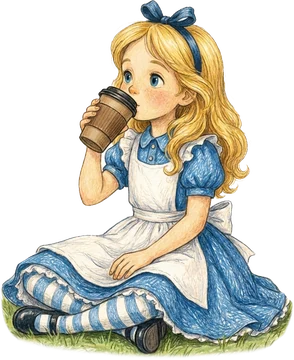
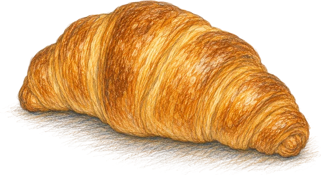
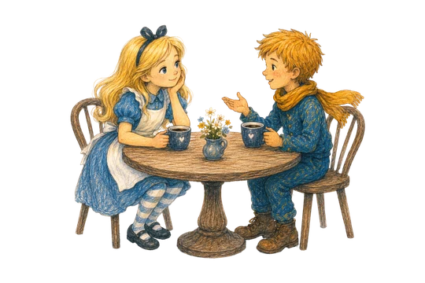
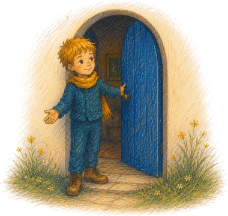

Отборное зерно
Спешелти от проверенных обжарщиков. Классику варим на рожковой, для ценителей — фильтр с новыми нотами каждый раз.

Рожковая и фильтр, зерно от проверенных обжарщиков.

Печём каждый день из хороших продуктов.

Кирпич, дерево, тёплый свет и негромкая музыка.

Можно с собакой, с ноутбуком или просто посидеть.
Спешелти от проверенных обжарщиков. Классику варим на рожковой, для ценителей — фильтр с новыми нотами каждый раз.
Круассаны, слойки, чизкейк и сезонные новинки — то, что хочется сфотографировать и тут же съесть.
Тёплый зал, веранда во дворе и розетки под рукой. Удобно работать, встречаться и отдыхать.
Интерьер и уютные уголки кофейни «Домик» — арт на стенах, тёплый свет и живые детали.
Всегда рады видеть вас — заходите на чашку спешелти и свежую выпечку. Мы в трёх минутах от Павелецкой, на Бахрушина.